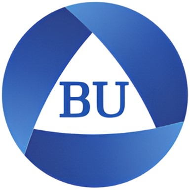
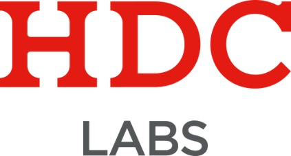
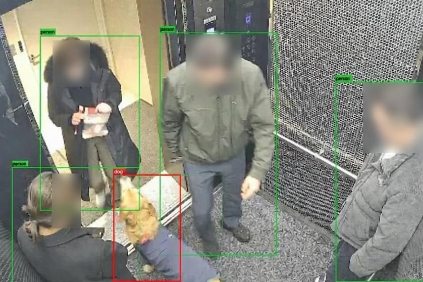
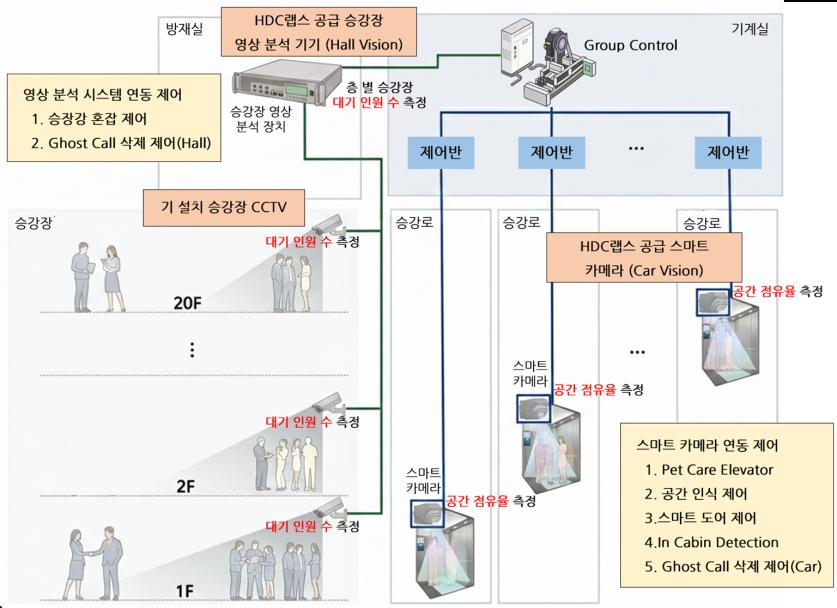
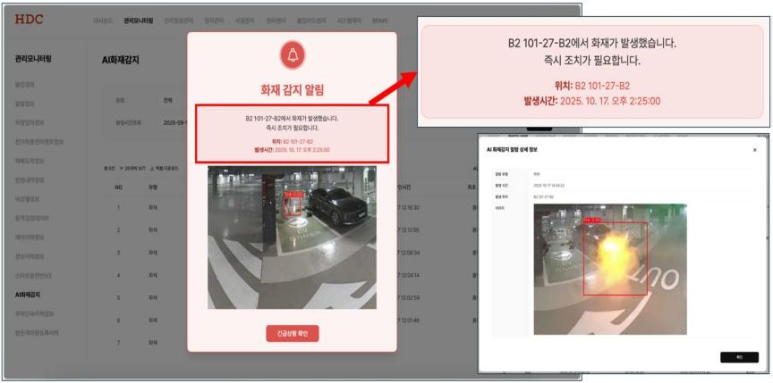
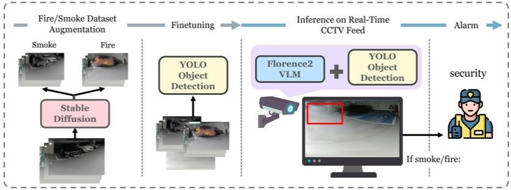
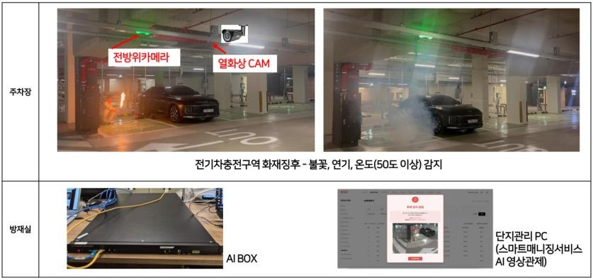

PoC to Deployment for Real-World Vision Systems
화재 감지 엘리베이터 내부 분석 이상행동 인식 생성형 AI
PROFILE
학력

경력

핵심 강점
기술 스택
PROJECT 01
엘리베이터 현장 적용을 목표로 데이터 구축부터 모델 검증, 배포 자동화까지 수행
HDC LABS · 2025.01 – 진행 중
AI 기반 엘리베이터 내부 상황 실시간 분석 시스템 개발
엘리베이터 내부 점유 상태, 반려견 합승 등 실시간 상황 분석
기술 제휴 MOU 검토를 위한 엘리베이터 내부 상황 분석 PoC 설계 및 성능 검증
실서비스 적용을 위한 배포형 모델 구조 최적화 및 검출, 판단 로직 정교화
엘리베이터 특수 시점 대응 합성 데이터 생성 및 실데이터 수집, 라벨링 체계 구축
모델, 코드 변경사항 반영을 위한 배포 자동화(CI/CD) 환경 구축

반려견 검출과 점유율 추정이 가능한 상황 분석 PoC 설계 및 검증
HDC현대산업개발, HDC랩스, 현대엘리베이터 기술 제휴 MOU 체결
PoC 검증 결과를 3사 기술 제휴 검토의 기술적 근거로 활용
기술 제휴 이후 관련 특허 2건 발명자로 등재
10Hz 상태 송신 요구 대응을 위한 배포형 구조 전환 방향 수립
초기 구조를 정량 측정으로 재검증, 단일 모델 파이프라인으로 재설계
운영 시나리오 중심 검증 및 판단 로직 최적화로 제품화 가능성 제고
top-view 차폐, door status 기반 상황과 CAN payload 출력 구조 검증
사내 엘리베이터 실연동 및 보드 제어 동작 확인
도메인 특화 합성 데이터 생성 체계와 실환경 데이터 확보 및 정제
반려견 검출 mAP50-95 0.47 → 0.79 개선
배포 자동화 환경(CI/CD) 구축으로 모델 변경의 안정적 반영
USB 수동 업데이트에서 Docker 기반 pull 배포 구조로 정립
이상행동 탐지용 경량화 연구로 확장 가능한 기반 마련
관련 논문 2편 제출

PROJECT 02
지하주차장 CCTV 환경에 맞춰 PoC 설계부터 현장 배포까지 전 과정 수행
HDC LABS · 2024.05 – 2025.10
HDC LABS · 2024.05 – 2025.10 · Deployed
잇따른 지하주차장 전기차 화재 사건 발생으로 전용 감지 시스템 요청
이상 온도 조기 감지 및 자동 알림이 가능한 화재 감지 보조 시스템 구축 필요
지하주차장 CCTV 환경 특화 합성 데이터 생성 프로세스 설계 및 구축
합성 데이터 기반 화재, 연기 탐지 YOLO 모델 재학습 및 성능 검증
PoC에서 현장 배포까지 단계별 프레임워크 연구 및 재설계
외부 포팅 업체 및 내부 연계 조직과 협업하여 알림 서비스 연결

YOLOv8s + VLM(Florence2) 기반 화재, 연기 탐지 PoC 설계 및 논문 발표
합성 데이터 활용으로 화재, 연기 탐지 정량적 성능 향상
F1 0.82 → 0.86, 연기 recall 0.70 → 0.83
도메인 특화 데이터 생성 파이프라인 구축으로 후속 연구로 확장
추가 연구를 통한 논문 게재 및 특허 출원
초기 VLM 중심 PoC 구조에서 엣지 디바이스 제약으로 현장 적용 한계 확인
YOLOv8n + CLIP 경량 구조로 전환, Hailo 듀얼 칩 기반 실행 구조 확정
단순 모델 교체가 아닌 판단 구조 자체를 사후 검증 방식으로 재설계
광명센트럴아이파크 전기차 충전구역 화재 감지 보조 시스템 시연 및 적용
현장 운영 중 모델 오탐 이슈에 대한 원인 분석과 재학습 대응 수행
반복 오탐 유형을 학습 데이터로 재반영, 기존 검증 성능 유지하며 오탐 감소 확인


PROJECT 03
버추얼 인플루언서 이미지 생성, Face Re-Aging, 화자 변환 음성 AI
METAVERSE ENTERTAINMENT · 2023.01 – 2024.05
PUBLICATIONS & PATENTS